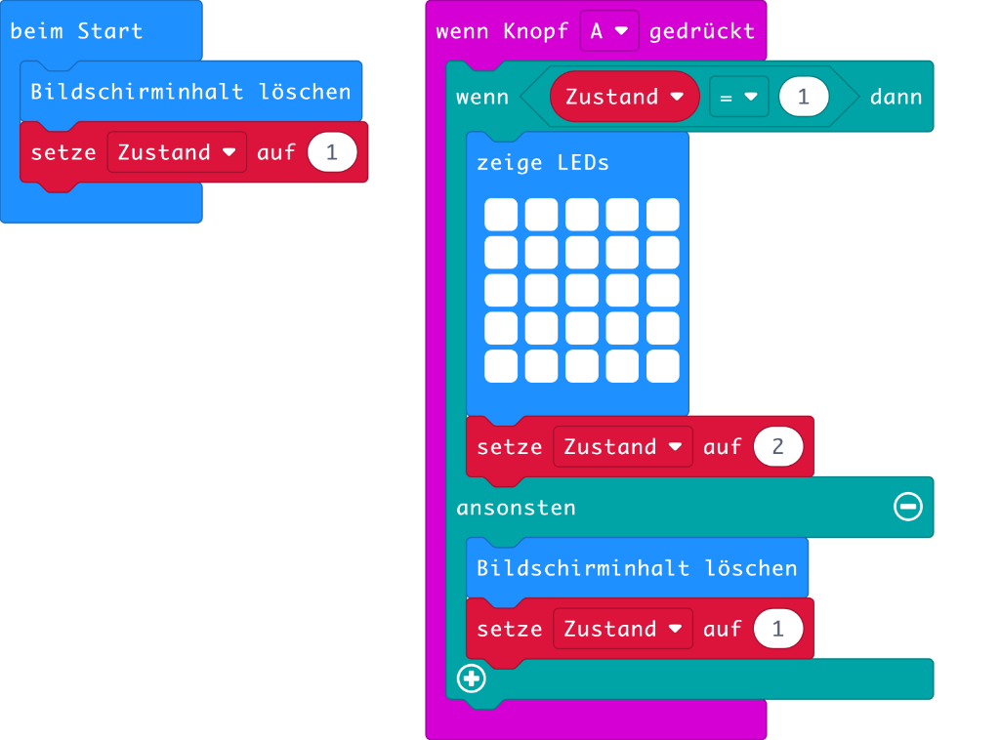

Licht an, Licht aus
In diesem Kapitel wirst du aus dem micro:bit eine kleine Lampe basteln. Die Taste A soll der Lichtschalter sein. Die Lampe hat zwei Zustände, nämlich Licht an und Licht aus, siehe Abb. 1. Zu Beginn ist man im Zustand Licht aus. Drückt man dann die Taste A, wechselt die Lampe in den Zustand Licht an. Drückt man wieder auf die Taste A, wechselt die Lampe wieder in den Zustand Licht aus.

Abb. 1 – Zustandsgraf für die Lampe (Bild: T. Jenni)
Da der Computer gut mit Zahlen umgehen kann, versehen wir die Zustände mit Zahlen. Zustand Licht aus soll mit der Zahl 1 und Zustand Licht an mit der Zahl 2 bezeichnet werden.
Damit die Lampe weiss, in welchem Zustand sie ist, braucht es eine Variable. Erstelle eine Variable mit dem Namen Zustand. Gehe dazu in den Bereich Variablen und klicke auf Erstelle eine Variable ..., siehe Video 1. Es erscheint eine Dialogbox, in welcher man den Namen der Variablen angeben kann. Nenne die Variable Zustand. Sobald die Variable erstellt ist, erscheinen zwei neue Befehle. Der eine heisst setze Zustand auf 0 und der andere ändere Zustand um 1. Mit dem ersten Befehl kann man den Wert der Variable setzen. Der zweite Befehl erhöht oder erniedrigt den Variablenwert um die entsprechende Zahl. Zwischen diesen beiden Befehlen besteht scheinbar nur ein kleiner Unterschied. Es ist aber trotzdem wichtig, dass du sie auseinanderhalten kannst.
Video 1 – Variable erstellen (Video: T. Jenni)
Nun geht es ans Programmieren. Erstelle zuerst das Startprogramm, siehe Abb. 1. Zu Beginn leuchtet die Lampe nicht, d.h. sie befindet sich im Zustand 1. Ziehe aus dem Bereich Grundlagen den Befehl Bildschirm löschen und hänge ihn beim Start an. Aus dem Bereich Variablen ziehe den Befehl setze Zustand auf 1 und füge in ebenfalls beim Start an. Auf diese Weise ist die Lampe bereit gemacht oder initialisiert, wie der/die Fachmann/-frau sagt.
Nun musst du noch auf den Tastendruck reagieren. Im Bereich Eingabe findest du den Befehl wenn Knopf A gedrückt. Wenn die Taste gedrückt wird, werden alle Befehle in diesem Zangenblock ausgeführt.
Zuerst musst du überprüfen, in welchem Zustand die Lampe ist. Ziehe aus dem Bereich Logik einen wenn-dann-Block und hänge ihn in den Zangenblock. Ebenfalls im Logikbereich findest du die den ist-gleich-Vergleichsblock. Mit dem überprüfe, ob die Variable Zustand den Wert 1 hat. Falls dies der Fall ist, wechsle in den Zustand 2. Schalte dazu alle LED's ein und setzen die Variable Zustand auf den Wert 1. Falls das nicht der Fall ist, d.h. wenn Lampe im Zustand 2 ist, werden alle Lichter abgestellt und die Variable Zustand auf 1 gesetzt.

Abb 2. - Programm für die Lampe (Bild: T. Jenni)
Das Programm ist nun fertig. Teste es doch gleich im Webbrowser. Klicke dazu auf die Taste A. Falls es funktioniert, kannst du das Programm auf deinen micro:bit laden und dann an die Batterie anschliessen. Fertig ist die kleine Taschenlampe. Super :-)
Aufgaben
- Ändere das Programm so ab, dass sich unterschiedliche Helligkeiten einstellen lassen, indem man die Taste A mehrfach hintereinander drückt.
- Schreibe ein Programm, welches die Lampe nur dann leuchten lässt, wenn man die Taste A gedrückt hält.
- Erweitere das ursprüngliche Programm so, dass wenn man auf die Taste B drückt, die Lampe blinkt. Zeichne zuerst den Zustandsgrafen auf.
Autoren: T. Jenni
Letzte Änderung: 14. Mai 2021

Einsteigerkurs für den BBC micro:bit von T. Jenni, et al. ist lizenziert unter einer Creative Commons Namensnennung - Nicht-kommerziell - Weitergabe unter gleichen Bedingungen 4.0 International Lizenz.